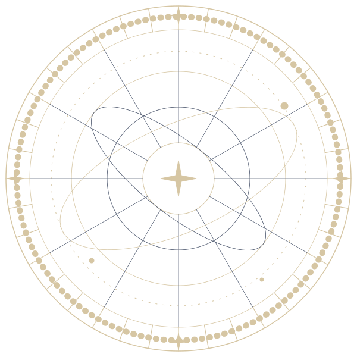
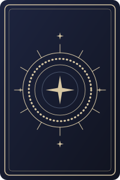
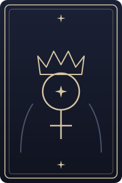
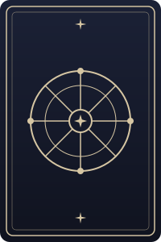

Personal Tarot Reading
Find your hour. Reveal your story.
Choose a time, draw three Tarot cards, and explore a moment of reflection before your personal reading.



How it works
Three quiet steps
01
Choose Your Hour
Pick a date and an available reading time.
02
Reveal Three Cards
Explore a three-card spread connected to your chosen session.
03
Book Your Reading
Choose a service and confirm your appointment.
Time Oracle
A Different Way to Begin
Every selected hour opens a small moment to pause and reflect. Pick a time, and let three cards set the tone for your session.
08:00 · Dawn10:00 · Clarity13:00 · Balance17:00 · Transition22:30 · Dream

Featured Readings
Choose how deep to go
A reading is a conversation, not a fixed prediction. Prices shown in VND.



About the Reader
A Space for Reflection
Calm, unhurried readings for people who enjoy symbols, stories and a little time to think. No experience with Tarot is needed — just bring a question, or none at all.
FAQ
Good to know
How does the three-card draw work?
Choose a date and an available hour, then reveal three cards: The Present, The Hidden and The Possibility. The cards are symbols and prompts for reflection, not fixed predictions. On this demo site the spread is a simulation.
How do I book a reading?
Pick your hour in the Time Oracle, choose a reading, then fill in your details on the booking page. Only hours that are genuinely free can be selected.
Can I change or cancel my appointment?
Yes. Contact the reader as early as you can and a new hour can be arranged. Cancellation policy: [to be confirmed by the reader].
Is my information private?
Only what is needed to arrange your session is collected: name, email and optional topic. You never have to share a question you would rather keep to yourself.
What are the limits of Tarot?
Tarot is a tool for reflection and entertainment. It does not replace medical, psychological, legal or financial advice, and no card guarantees an outcome.